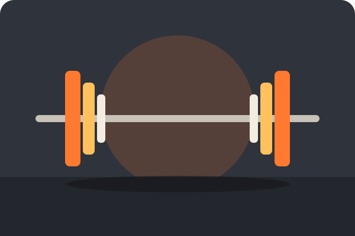
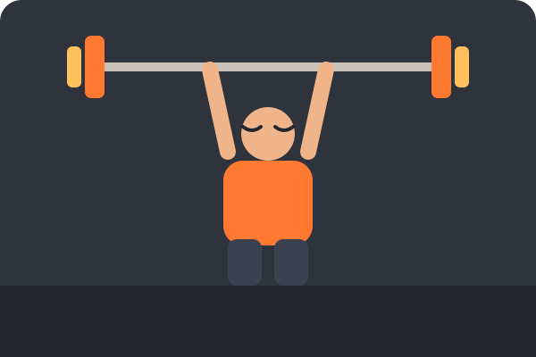
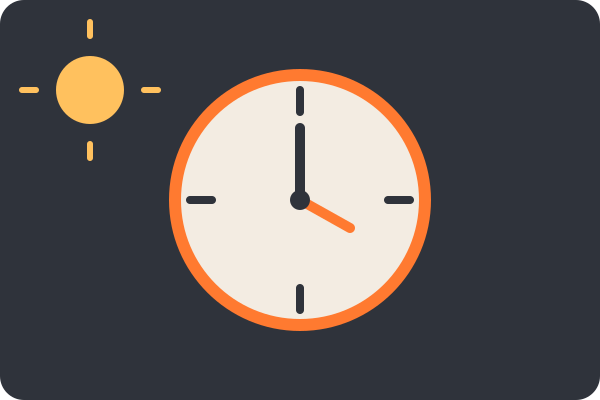
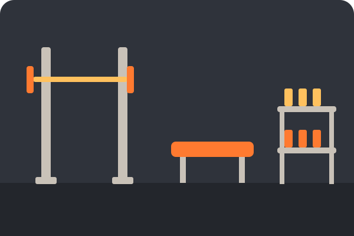
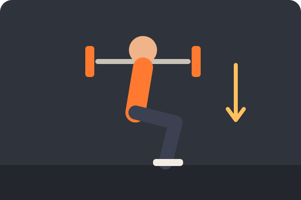
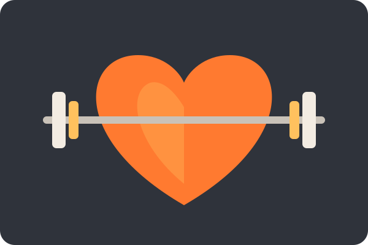

What Is Lifting?
Lifting weights, also known as resistance training, is moving a heavy load on purpose. Barbells, dumbbells, cables and machines. You pick an exercise, do a set number of reps, rest, and repeat. Over time you add a little more weight or a few more reps, and your muscles, bones and tendons adapt to handle it.

AI Prompt: "Draw a flat cartoon barbell with orange and gold plates on a dark gym floor."
The main idea is something called progressive overload. If you lift the same weight forever, your body has no reason to change. How ever small, steady increases give it one.
Different types of lifting styles:- Strength training: lifting heavier weights for fewer reps.
- Hypertrophy training: moderate weights for more reps to build muscle size.
- Endurance training: lighter weights for many reps.
About Me
My name is Ethan, a student at UNC Charlotte. Lifting is the hobby that keeps the rest of my week in order. It gives me a time to put my phone down and focus on one thing.

AI Prompt: "Draw a simple flat cartoon lifter in an orange shirt pressing a barbell overhead."
I train on a push, pull, legs routine and everyday I learn something new about fitness. I wanted to make myself better everyday, and by going to the gym and lifting weights that helps me by building not only physical strength but mental strength aswell.
| Style | Push / Pull / Legs |
|---|---|
| Favorite lift | Shoulder press machine |
| Experience level | Beginner to intermediate |
| Current goal | Add weight to my lifts every 2 weeks at least |
Best Times to Lift
The best time to lift is very dependent on the person, and their daily responsibilities/schedule. Later morning times are usually quiet and fits my daily routine personally. Late afternoons are often when people feel strongest and energized, however gyms are usually busier.

AI Prompt: "Draw a flat cartoon clock between a sun and a moon in orange, gold and cream."
| Day | Focus | Time |
|---|---|---|
| Monday | Push (chest, shoulders, triceps) | Morning |
| Tuesday | Pull (back, biceps) | Morning |
| Wednesday | Legs | Morning |
| Thursday | Rest (chest, shoulders, triceps) | Morning |
| Friday | Push (back, biceps) | Morning |
| Saturday | Pull and legs | Morning |
| Sunday | Rest | - |
Schedule matters less than it seems. As long as you show up consistently a few times a week, you will see results with your fitness journey. Sometimes the key to success in fitness is staying disciplined by showing up even if you don't want to.
Where to Lift
You can lift almost anywhere. The right spot depends on your budget, schedule and how much equipment you want.

AI Prompt: "Draw a flat cartoon gym floor with a squat rack, a bench and a dumbbell rack."
- Campus recreation center: Included with tuition at UNCC and has plenty of equipment for everything fitness related. However, it can be busy at times and you may have to wait on certain equipment.
- Commercial gym: A lot more options for equipment that might not be available at home or a smaller gym, and the hours are usually longer. There is a monthly fee for commerical gyms, how ever it usually is pretty cheap.
- Home gym: No commute and no waiting. Working out at home can save you a lot of time in your day which allows you to exercise but still do other tasks you may have. However, it takes space and an upfront cost.
If you decide to go to a gym that isn't your home, familiarize yourself with the peak hours for the equipment you use so you can plan your workouts at the best times.
How to Start
Starting is simpler than it looks. Pick a handful of basic lifts that each target a different muscle, learn them with light weight, then add weight slowly. Good form matters more than the number on the bar.

AI Prompt: "Draw a flat cartoon lifter in the bottom of a barbell squat with a down arrow."
- Learn the five basic compound lifts: squat, bench press, deadlift, overhead press and row.
- Warm up with a light set before the heavy ones.
- Do 3 sets of 6 to 10 reps and stop each set with one or two reps left in the tank.
- Add a small amount of weight when every set feels solid.
- Rest, eat a good diet and sleep. Muscle is built between workouts.
If you are unsure about a lift, there are plenty of resources online. I personally like to use TikTok to watch short-form straight to the point videos on how to do a certain exercise or correct my form if needed.
Why I Lift
I lift weights because it helps me build discipline, get stronger, and see progress over time. Every workout is an opportunity to push myself and improve from where I was before.

AI Prompt: "Draw a flat cartoon orange heart with a barbell through it."
- It reduces stress and clears my head.
- It builds discipline that carries over to other things, such as schoolwork.
- It keeps bones, joints and muscles healthy for the long run.
- It is a good way to meet people with similar goals.
A lot of days I do not feel like going. But I push my self go anyway, and I have never regretted a workout once it was done.
AI Prompts
I used AI (Claude) to help write the code, the text and the illustrations for this page. These are the prompts I used.
-
Page and code prompt:
Build a standalone single page hobby site about lifting weights at the gym. It needs header, main and footer in one index.html with an embedded stylesheet, sections for Who, What, When, Where, How, Why and AI Prompts, a nav that shows one section at a time with JavaScript, and a unique divider symbol that also updates the page title. It should follow CRAP principles, use a color scheme different from my course site, and validate cleanly.
-
Image prompt (used for all six pictures, with the subject changed each time):
Draw a flat cartoon illustration, using only dark charcoal, orange, gold and cream, showing the subject.
| Part | AI help |
|---|---|
| HTML, CSS and JavaScript | Generated, then reviewed and edited by me |
| Images and favicon | Generated as SVG drawings |